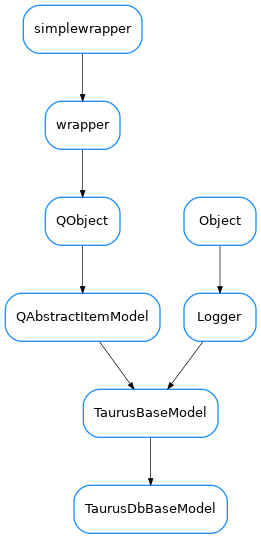

TaurusDbBaseModel¶

-
class
TaurusDbBaseModel(parent=None, data=None)[source]¶ Bases:
taurus.qt.qtcore.model.taurusmodel.TaurusBaseModelThe base class for all Taurus database Qt models. By default, this model represents a plain device perspective of the underlying database.
-
ColumnNames= ('Device', 'Alias', 'Server', 'Class', 'Alive', 'Host')¶
-
ColumnRoles= ((3, 3), 4, 8, 2, 11, 12)¶
-